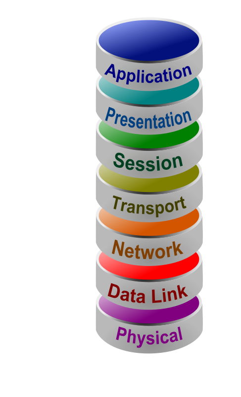

The network layer is responsible for transferring data between two different networks. Segments that are being sent from the upper layers are broken into packets and then reassembled on the receiving computer. This layer also establishes source and destination addresses for devices, which helps identify a computer on the internet. It determines the best path to send or route data from the source to its destination.
You may find more information on the OSI Model here
